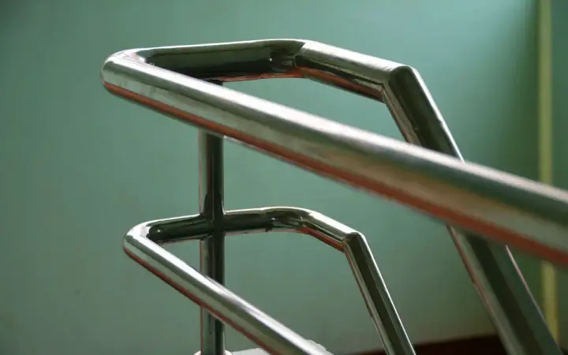
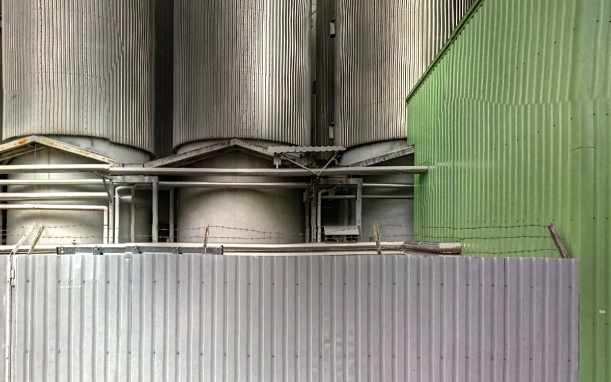
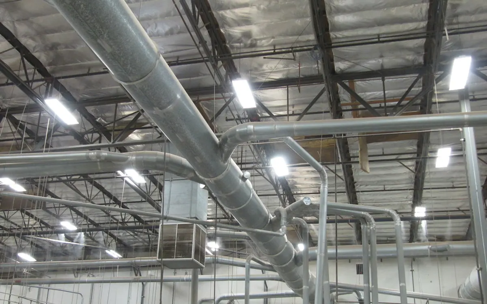

Trang chủ › Thu mua phế liệu › Thu mua phế liệu inox
Thu mua phế liệu inox giá cao tại TPHCM – Bảng giá mới nhất 2026
Bề ngoài inox 304, 201 hay 430 trông gần như giống nhau, nhưng giá chênh tới vài chục nghìn mỗi ký vì khác hàm lượng niken. Trạm Giá Phế Liệu thử mác inox ngay tại chỗ bằng thuốc thử và nam châm, nên bạn biết rõ mình bán loại gì với giá bao nhiêu.
Chúng tôi nhận inox từ bếp công nghiệp, nhà xưởng thực phẩm, công trình lan can, bồn nước cũ, máy móc thanh lý trong toàn TP.HCM.

Bảng giá thu mua phế liệu inox mới nhất 2026 của Trạm Giá Phế Liệu
Giá tham khảo cập nhật ngày 12/11/2026, đơn vị đồng/kg, áp dụng cho giao dịch tại TP.HCM.
| Loại phế liệu | Giá thu mua (đ/kg) |
|---|---|
| Inox 304/304L | 56.000 – 66.000 |
| Inox 316/316L | 60.000 – 90.000 |
| Inox 201 | 38.000 – 50.000 |
| Inox 205/204 | 30.000 – 48.000 |
| Inox 430/434/439/441 | 22.000 – 40.000 |
| Inox 410/409/420/440 | 22.000 – 40.000 |
| Inox 340 | 14.000 – 27.000 |
| Inox 504/604 | 35.000 – 40.000 |
| Inox 510 | 25.000 – 45.000 |
| Inox 630/631 | 32.000 – 55.000 |
| Inox 202 | 40.000 – 52.000 |
| Inox 301 | 45.000 – 58.000 |
| Inox 321/347 | 56.000 – 68.000 |
| Inox 309/309S | 65.000 – 85.000 |
| Inox 253MA | 70.000 – 95.000 |
| Inox 310/310S | 85.000 – 110.000 |
| Inox duplex 2205 | 60.000 – 85.000 |
| Inox duplex 2507 | 75.000 – 100.000 |
| Inox 904L | 130.000 – 180.000 |
| Bazơ inox | 20.000 – 40.000 |
| Inox máy móc, thiết bị (lẫn tạp) | 20.000 – 40.000 |
| Inox tấm, cuộn | 35.000 – 66.000 |
| Inox vụn | 30.000 – 60.000 |
| Ba dớ inox | 30.000 – 60.000 |
Giá trong bảng áp dụng cho inox sạch, đúng mác sau khi thử. Inox còn dính sắt, nhựa, bê tông hoặc gắn liền motor được tính theo nhóm inox máy móc, thiết bị lẫn tạp. Xem đủ hơn 90 loại ở bảng giá phế liệu hôm nay.
Trạm Giá Phế Liệu thu mua phế liệu inox các loại sau
Inox được thu mua theo mác. Dưới đây là 6 nhóm inox phổ biến nhất khi chúng tôi đi thu mua ở TP.HCM.
Phế liệu inox 304
Mác phổ biến nhất trong bồn nước, bếp công nghiệp, thiết bị nhà hàng và ống inox thực phẩm. Inox 304 không hút nam châm, không đổi màu khi thử thuốc, và là nhóm giá cao trong các loại inox thông dụng.
Phế liệu inox 316
Inox có thêm molypden nên chịu hóa chất và nước biển tốt, thường gặp ở thiết bị y tế, bồn hóa chất, phụ kiện tàu thuyền. Giá cao hơn 304, nên cần thử đúng mác trước khi gộp chung vào một lô.
Phế liệu inox 201
Inox giá rẻ dùng cho lan can, cổng, kệ và đồ gia dụng. Inox 201 bị thuốc thử đổi màu nhanh, giá thấp hơn 304 nhưng vẫn cao hơn sắt rất nhiều, nên đừng bán lẫn với sắt vụn.
Phế liệu inox 430
Inox hút nam châm, thường là vỏ máy giặt, mặt bếp, nồi và chảo. Đây là mác có giá thấp nhất trong các loại inox phổ biến vì gần như không có niken, nhưng vẫn được tính riêng với sắt.
Phế liệu inox tấm, inox cuộn
Ba dớ tấm, đầu cuộn và phần thừa sau dập, cắt laser từ xưởng gia công. Hàng sạch, ít tạp và thường cùng một mác, nên được giá ổn định và dễ chốt nhanh chỉ qua ảnh.
Phế liệu inox máy móc, thiết bị
Máy chế biến thực phẩm, tủ inox, bồn có motor và bơm. Phần inox được tính theo mác sau khi thử, còn motor, bơm và linh kiện điện được tháo ra tính riêng theo kim loại.

Các yếu tố ảnh hưởng đến giá phế liệu inox
Cùng một loại hàng nhưng giá thực nhận có thể khác nhau. Đây là 8 yếu tố nhân viên Trạm Giá Phế Liệu xem xét khi báo giá.
Chất lượng và chủng loại phế liệu inox
Mác inox quyết định giá nhiều nhất. Inox 316 và 310 có giá cao gấp đôi inox 430, vì vậy một bếp công nghiệp lẫn nhiều mác nên được thử từng món thay vì báo một giá chung.
Số lượng phế liệu
Lô inox cùng mác từ 200 kg trở lên dễ bán thẳng cho nhà máy luyện, nên được báo giá tốt hơn lô ít ký hoặc lô trộn lẫn nhiều mác phải phân loại lại ở bãi.
Vị trí thu mua
Bếp công nghiệp đặt trong tầng hầm hay nhà hàng ở phố đông xe cần thêm người khuân vác và hẹn giờ ngoài cao điểm, nên giá có điều chỉnh nhỏ cho phần công này.
Thời điểm thu mua
Giá inox đi theo giá niken thế giới, có thể biến động mạnh trong cùng một tháng. Giá đã chốt với bạn được giữ trong 24 giờ để kịp hẹn xe tới lấy hàng.
Tỷ lệ kim loại và thành phần hợp kim
Hàm lượng niken, crom và molypden càng cao thì giá càng cao. Đây là lý do nhân viên phải thử mác từng món, vì nhìn bằng mắt không phân biệt được 304 với 201.
Kích thước và hình dạng phế liệu
Tấm và ống inox lớn dễ thử mác, dễ bốc xếp nên được chốt giá nhanh. Inox vụn, ba dớ nhỏ phải thử theo mẫu đại diện, nên đôi khi giá chốt thận trọng hơn.
Tình trạng và mức độ lẫn tạp chất
Bồn còn chân sắt, thiết bị còn motor hay dính keo, xi măng đều bị tách ra hoặc trừ khối lượng. Tháo sẵn chân sắt giúp phần inox được tính trọn theo mác.
Chi phí thu gom và xử lý
Cắt bồn lớn, tháo lan can nhiều tầng hay hạ thiết bị từ trên cao có chi phí nhân công và dụng cụ. Khoản này được báo trước, không phát sinh sau khi cân.
Quy trình thu mua phế liệu inox 5 bước
Tiếp nhận & báo giá
Gửi ảnh inox qua Zalo và cho biết món đó có hút nam châm không. Dựa vào đó, nhân viên báo giá sơ bộ theo mác dự kiến và hẹn giờ thử mác tại chỗ.
Khảo sát tận nơi
Với bếp công nghiệp, bồn lớn hoặc thiết bị nhà xưởng, nhân viên đến thử mác bằng thuốc thử, ước khối lượng từng nhóm và xem đường đưa hàng ra ngoài.
Chốt giá, ký kết
Mỗi mác inox có một đơn giá riêng, được ghi vào phiếu hoặc biên bản trước khi tháo dỡ, để hai bên cùng đối chiếu khi cân xong từng nhóm.
Cân & bốc xếp
Inox được tách theo mác, cân riêng từng nhóm trước mặt bạn và chỉ bốc lên xe sau khi hai bên đã kiểm tra số cân ghi trên phiếu.
Thanh toán 1 lần
Trạm Giá thanh toán đủ một lần ngay tại chỗ bằng tiền mặt hoặc chuyển khoản, kể cả với lô bếp công nghiệp có giá trị lớn.

Vì sao bán phế liệu inox cho Trạm Giá Phế Liệu?
Cân đo trung thực
Thử mác trước mặt khách bằng thuốc thử và nam châm, không gộp hết vào giá inox 201 để hạ giá như cách một số nơi vẫn làm với người bán không rành.
Thanh toán ngay
Tiền mặt hoặc chuyển khoản ngay sau khi ký phiếu cân, không hẹn ngày sau, nên nhà hàng đóng cửa có thể quyết toán gọn trong một buổi.
Năng lực thu mua lớn
Trạm Giá nhận cả bếp công nghiệp, dây chuyền thực phẩm bằng inox và bồn chứa vài tấn, có đội cắt và xe cẩu cho các hạng mục nặng.
Vận chuyển thần tốc
Xe tới trong 1–3 giờ ở nội thành, có xe cẩu tự hành cho bồn và thiết bị nặng, có thể hẹn tháo bếp sau giờ đóng cửa nhà hàng.
Chứng từ rõ ràng
Phiếu cân ghi rõ mác inox, số ký và đơn giá từng mác, giúp chủ nhà hàng hay doanh nghiệp đối chiếu dễ dàng khi làm hồ sơ thanh lý.
Chính sách hoa hồng cho người giới thiệu
Bạn biết nhà hàng sắp đóng cửa, xưởng thực phẩm thay dây chuyền hay chung cư thay lan can? Giới thiệu cho Trạm Giá Phế Liệu để nhận hoa hồng 1–1,5% giá trị lô hàng, cộng thêm 0,5% vì inox là kim loại màu. Hoa hồng chuyển khoản trong 3 ngày làm việc.
Xem chính sách hoa hồng →Các lô phế liệu inox Trạm Giá Phế Liệu thường thu mua
Mỗi loại lô hàng có cách tháo dỡ, phân loại và tính giá riêng. Đây là những trường hợp chúng tôi gặp nhiều nhất.
Bếp công nghiệp nhà hàng đóng cửa
Bàn, chậu, chụp hút và kệ inox 304, 201 thường lẫn lộn. Chúng tôi thử mác từng món, tháo motor quạt hút để tính riêng và tháo bếp sau giờ đóng cửa.
Bồn nước inox cũ trên sân thượng
Nếu bồn không đưa xuống nguyên khối được, đội thu mua cắt tại chỗ bằng máy cắt cầm tay. Chân đỡ bằng sắt được tách ra và tính riêng theo giá sắt.
Ba dớ inox tấm từ xưởng gia công
Hàng sạch, thường cùng một mác. Ba dớ được đóng kiện, cân theo từng mác và có thể thu định kỳ hằng tuần nếu xưởng phát sinh đều.
Lan can, cổng inox khi cải tạo nhà
Thường là inox 201, đôi khi có tay vịn 304. Đội thu mua tự tháo, cắt gọn, thử mác từng đoạn và dọn sạch chỗ làm trước khi rời đi.
Thiết bị y tế, thí nghiệm thanh lý
Phần lớn là inox 316. Chúng tôi thử mẫu cẩn thận trước khi báo giá vì chênh lệch giữa 316 và 304 lớn, và tách riêng linh kiện điện tử đi kèm.
Khu vực thu mua phế liệu inox
Xe chạy hằng ngày ở các phường trung tâm, Tân Bình, Tân Phú, Bình Tân, Gò Vấp, Bình Thạnh; chạy theo lịch ở Thủ Đức, Quận 7, Quận 12, Bình Chánh, Hóc Môn, Nhà Bè; nhận lô lớn ở Củ Chi, Cần Giờ. Chi tiết ở trang khu vực thu mua.
Dịch vụ và khu vực liên quan
Máy chế biến thực phẩm và tủ inox thường có motor, bơm bên trong, nên phần máy được tách và tính theo dịch vụ thu mua máy móc cũ để không bị gộp giá. Bếp nhà hàng khi thanh lý hay có cả chụp hút inox lẫn khung kệ nhôm, vì vậy chúng tôi báo giá chung với dịch vụ thu mua phế liệu nhôm trong cùng một buổi. Nhà máy thực phẩm trong khu công nghiệp phát sinh ba dớ và bồn inox định kỳ, có thể đăng ký lịch thu theo dịch vụ thu mua phế liệu khu công nghiệp.
Nhà hàng ở Phú Mỹ Hưng là nguồn inox 304 lớn, chúng tôi hẹn tháo bếp sau giờ đóng cửa như mô tả ở trang thu mua phế liệu Quận 7. Nhà máy hóa chất ven sông ở Nhà Bè có nhiều inox 316, xem cách thử mác và làm thủ tục cổng ở trang thu mua phế liệu Nhà Bè.
Các câu hỏi thường gặp về dịch vụ thu mua phế liệu inox
Bao lâu thì xe đến thu mua inox?
Với nội thành TP.HCM, xe thường tới trong 1–3 giờ; ngoại thành trong ngày. Bếp nhà hàng cần tháo dỡ có thể hẹn sau giờ đóng cửa để không ảnh hưởng việc kinh doanh.
Có thu mua inox ở tỉnh không?
Trạm Giá phục vụ chủ yếu trong TP.HCM. Nếu bạn có lô inox lớn ở tỉnh lân cận, hãy gọi để chúng tôi xem có sắp được chuyến xe riêng không trước khi hẹn.
Thử mác inox có mất phí không?
Không mất phí. Thử mác bằng thuốc thử và nam châm, cùng việc báo giá, đều miễn phí và làm ngay trước mặt bạn, kể cả khi bạn quyết định không bán.
Nếu tôi không đồng ý giá thì sao?
Bạn có thể không bán và không mất phí. Mọi kết quả thử mác đều được làm trước mặt bạn, nên bạn có thể tự kiểm tra lại hoặc hỏi thêm nơi khác trước khi quyết định.
Có tháo dỡ bếp, bồn inox không?
Có. Đội thu mua tháo bếp, cắt bồn, cắt gọn lan can và tự bốc xếp lên xe. Chi phí tháo dỡ, nếu có, được báo trước khi làm chứ không trừ sau khi cân.
Thu mua inox có an toàn môi trường không?
Có. Inox được phân loại theo mác và bán lại cho cơ sở luyện thép không gỉ đủ điều kiện. Motor, dầu và linh kiện đi kèm được tách ra xử lý riêng.
Doanh nghiệp có xuất hóa đơn được không?
Hiện Trạm Giá chưa xuất hóa đơn VAT. Doanh nghiệp được nhận phiếu cân có chữ ký hai bên và bảng kê mua hàng ghi rõ mác inox để làm chứng từ thanh lý.
Có làm cuối tuần không?
Có. Trạm Giá làm việc 7:00 – 19:00 mỗi ngày, kể cả thứ Bảy và Chủ nhật, nên nhà hàng có thể tranh thủ ngày nghỉ để tháo bếp.